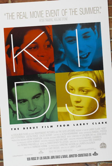

Larry Clark
1995
91 minutes
Well, this is a depressing one. You remember specifically not wanting to see this when it came out because the central thesis of it made you so squeamish, especially since you were roughly the same age as some of the Kids in question. You knew enough of the plot and tone to be scared off. Seeing it many years later is still pretty harrowing.
You end up regretting your decision to watch this in the coffee shop pretty quickly. It's a stressful watch as you try to make sure no one is able to get a good look at your laptop screen or the captions while you're viewing this. You're pretty sure you're successful--you have trouble seeing your own screen in this place with the glare of the sun reflected on your dusty laptop screen, so someone would have to be snooping pretty hard to see what was going on. Still you keep it ready to alt-tab or close windows in a hurry if necessary.
The Daniel Johnston "Casper the Friendly Ghost" theme song makes you a bit nostalgic for a woman you hadn't thought of in years. After your first year of grad school, you spent a chunk of the summer teaching "nerd camp" for extra money. It was a program through Johns Hopkins for gifted and talented middle school students who were taking a number of different very intense all-day enrichment classes. You had a handful of very bright students, who were nothing like the "kids" in this film. They were nerds who were there to learn Algebra II and Pre-Calculus, with a little bit of Calculus thrown in for fun. Despite your worst expectations, your students were bright and attentive and well-behaved--and for the most part just normal-acting mathematically precocious kids who reminded you a bit of yourself at the same age.
Since your site was mostly a "humanities" site, you decided to throw a lot of humanities content to your students. Every day after lunch you would have time for one silly free-time enrichment activity, which was one of your favorite parts. You found ways to mix poetry and literature into the classes. You gave mini lectures on the mathematics of Alice in Wonderland. You gave students fantastic Raymond Smullyan logic problems about knights who always told the truth and knaves who always lied. You read them mathematical poems and nursery rhymes. You even dug up some mathematical problems from the classical era in India which were in the form of verse, which would be presented by scholarly suitors to their ladies to solve. Your students with southeast-Indian heritage found these particularly stimulating.
Most of the instructors were housed in the same dormitory, and most were grad students or post-doctorate students or other academics who were entering a burnout track and needed some change of pace.
The site you were teaching at was mostly a "humanities" site, so your math class was a bit of an oddball class. Most of the other students were there to take history classes or social sciences or creative writing classes or other such things. Most of the other instructors were humanities types, which was a nice change of pace from all the math graduate students you had been hanging out with, who could be a depressing and frustrating lot. Instructors tended to drink and smoke a lot since the days were pretty long and stressful. This was tolerated as long as the students couldn't see you doing so, and this ended up being a communal activity out on the hill behind the dorms after the last class was over for the day. One of the instructors who had a vehicle would go fetch beer, mostly cheap cases of Yuengling, from the local Pennsylvania state-run liquor store.
You got to be pretty good friends with a Native American guy from the Pacific Northwest, a big leftist punk dude with a long ponytail. You tagged along with him on an outing one weekend to go pay a visit to the former Carlisle Indian School (which had a mission to educate the savages and had a motto along the lines of "Kill the Indian, save the man.") He was quite eager to take the opportunity of his tenure in Carlisle to piss on the founder's grave, and you joined him in doing so. It was a nice bonding experience.
During your stay you developed a bit of a doomed crush on one of the creative writing instructors, a small quiet poet from Austin with very short hair and a very soft voice and a dreamy demeanor. She was six years older than you--nearly thirty!--which to you in those days seemed like an insurmountable age gap, and she seemed to be in some uneasy state of being half-broken-up with whatever guy she was dating back in Texas. The two of you innocently and fruitlessly flirted and she would read you her poems and you would listen eagerly, and she would help you vet ideas for literature materials to throw at your students. She was cluelessly cool in a way you have rarely encountered. She knew everyone weird in Austin from the era when Austin was starting to realize the need to keep Austin weird.
You particularly remember trying to talk music with her since you were a huge fan of a number of Texas punk bands at the time. She wasn't much of a punk, but she described to you one odd man she knew from downtown Austin who was very amiable if a bit simple-seeming. He would often sell or give away his cassette tapes on the street. She was friendly with this guy and had several of his tapes at home. It became quickly obvious to you that she was talking about Daniel Johnston. You grew quite excited by this and guessed his name, and she was surprised that you knew about "Danny", who she thought was just some sweet weird local guy. You had trouble properly putting this in context for her, but she was amused by your excitement about her oddball friend.
The two of you never hooked up beyond some extremely innocent cuddling. You kept up a brief correspondence after the summer was over and then lost touch and you only now just remembered her first name after all these years. Some of the other people you were briefly intensely close friends with for those weeks, you can't even remember that. You imagine in the age of social media it would have been easier to stay in touch, but you probably wouldn't have been as prompted to get to know the people in front of you at the time as well either. You would have spent off-hours seeing what your already-scattered friends back home were up to instead.
Time to choose something different: